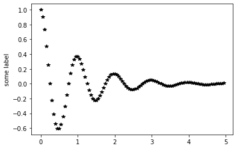
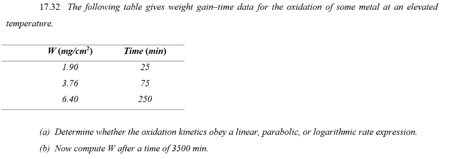
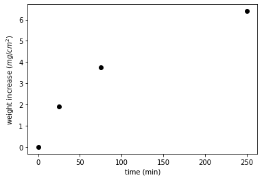

4. Short Lesson: Plotting functions#
# only need to import these once
# place all import statements in the first cell of your notebook
import numpy as np
import matplotlib.pyplot as plt
from scipy import special #this contains the erf() function
np.e
2.718281828459045
np.exp(1)
2.718281828459045
np.linspace(-2.5, 2.5, 5)
array([-2.5 , -1.25, 0. , 1.25, 2.5 ])
np.arange(-2.5, 2.5, 0.5)
array([-2.5, -2. , -1.5, -1. , -0.5, 0. , 0.5, 1. , 1.5, 2. ])
4.1. useful functions in numpy and scipy.special#
np.piecewise(x, [x < 0, x >= 0], [-1, 1])
np.linspace(-2.5, 2.5, 6)
np.log()
np.log10()
np.sin()
np.amax()
special.erf()
np.eye(2)
array([[1., 0.],
[0., 1.]])
x=np.array([-10, -5, 0, 10])
np.piecewise(x, [x < 0, x==0, x > 0], [-1, 0, 1])
array([-1, -1, 0, 1])
x=np.array([-10, -5, 0, 10])
np.piecewise(x, [x < 0, x >= 0], [lambda x: -x, lambda x: x])
array([10, 5, 0, 10])
np.linspace(-2.5, 2.5, 6)
array([-2.5, -1.5, -0.5, 0.5, 1.5, 2.5])
np.arange(0.0, 1.0, 0.25)
array([0. , 0.25, 0.5 , 0.75])
np.inf
np.nan
np.e
np.pi
3.141592653589793
# t must be an np array not a python list
def myfunc(t):
return np.exp(-t) * np.cos(2*np.pi*t)
xdata=np.arange(0.0, 5.0, 0.05)
ydata=myfunc(xdata)
plt.plot(xdata, ydata, 'k*')
plt.ylabel('some label')
plt.show()

# t must be an np array not a python list
def myfunc(t):
return special.erf(t)
xdata=np.arange(0.0, 5.0, 0.05)
ydata=myfunc(xdata)
plt.plot(xdata, ydata, 'k*')
plt.ylabel('some label')
plt.show()

4.2. Problem 17.32 Callister 10th ed. Metal oxidation.#
{kind=link}
Growth laws for oxides on metals:
- Parabolic Growth: $W^2 =K_1 \ t + K_2$
- Linear Growth: $W = K_3 \ t$
- Logarithmic Growth: $W=K_4\ \log(K_5\ t + K_6)$
xdata=np.array([0,25, 75, 250])
ydata=np.array([0,1.9, 3.76, 6.4])
plt.plot(xdata, ydata, 'ko')
plt.ylabel('weight increase ' + r'$( mg/cm^2 )$')
plt.xlabel('time (min)')
plt.show()

from numpy import exp, linspace, random
def gaussian(x, amp, cen, wid):
return amp * exp(-(x-cen)**2 / wid)
from scipy.optimize import curve_fit
x = linspace(-10, 10, 101)
y = gaussian(x, 2.33, 0.21, 1.51) + random.normal(0, 0.2, x.size)
init_vals = [1, 0, 1] # for [amp, cen, wid]
best_vals, covar = curve_fit(gaussian, x, y, p0=init_vals)
print('best_vals: {}'.format(best_vals))
best_vals: [2.3458706 0.16301304 1.36857763]